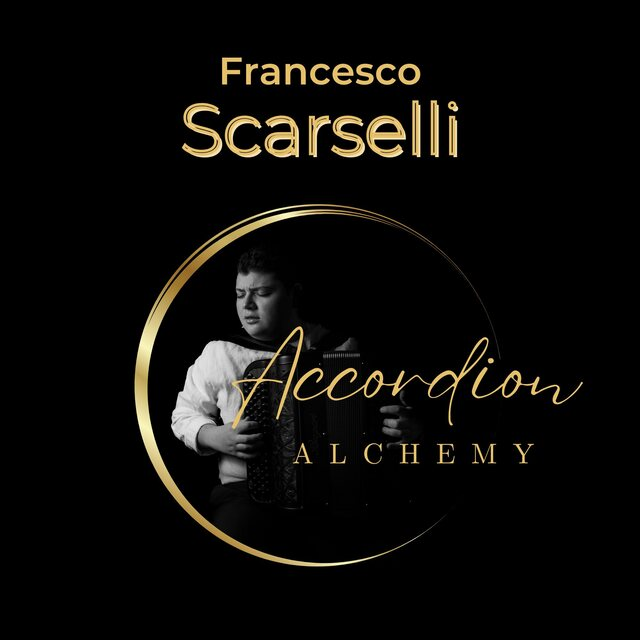
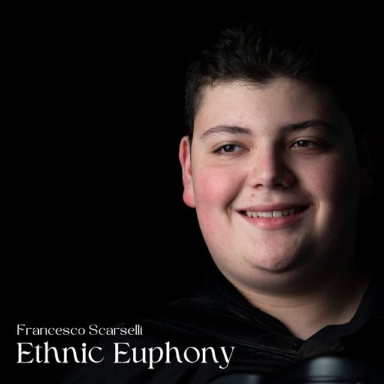

Dischi
Due EP pubblicati nel 2024, entrambi disponibili su tutte le piattaforme di ascolto.

Accordion Alchemy
EP, 2024 — cinque brani fra Piazzolla, Parker e il repertorio brasiliano
Quarantacinque secondi per brano, presi dal cuore del pezzo. L'album intero è su tutte le piattaforme.

Ethnic Euphony
EP, 2024 — cinque brani fra danze popolari, valzer e colonne sonore
Quarantacinque secondi per brano, presi dal cuore del pezzo. L'album intero è su tutte le piattaforme.